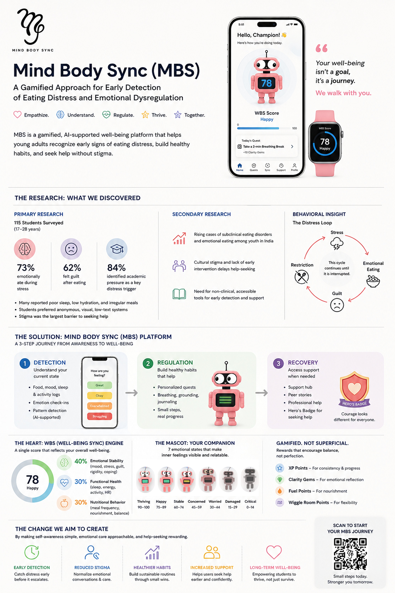

🧬Mind Body Sync — Place images/mbs.png.jpg here
The Research
115 students aged 17–28 were surveyed across India. The data revealed a critical behavioral loop — stress triggers emotional eating, which triggers guilt, which triggers restriction, which feeds back into stress. This cycle continues until it is interrupted by design.
73% reported emotionally eating during stress. 62% felt guilt after eating. 84% identified academic pressure as the key distress trigger. Cultural stigma was identified as the largest barrier to help-seeking.
"Students preferred anonymous, visual, low-text systems. Stigma was the largest barrier to seeking help. The system had to normalize emotional conversations — not pathologize them."
The Solution
The platform is built around three phases: Detection (understand your current state), Regulation (build healthy habits), and Recovery (access support when needed). Each phase is designed to reduce stigma and increase self-awareness through small, manageable interactions.
The WBS Engine — a single score combining Emotional Stability (40%), Functional Health (30%), and Nutritional Behavior (30%) — gives users a non-judgmental, holistic picture of their wellbeing at a glance.
The Heart of the System
A single score that reflects overall wellbeing across three domains — because wellbeing is relational. Any system that addresses only one domain will fail its users precisely when they need it most.
"Wellbeing is a relational state. Any system that addresses only one domain will fail its users precisely when they need it most."
By making self-awareness simple, emotional care approachable, and help-seeking rewarding — the platform aims to shift young adults from distress loops to sustainable well-being patterns.